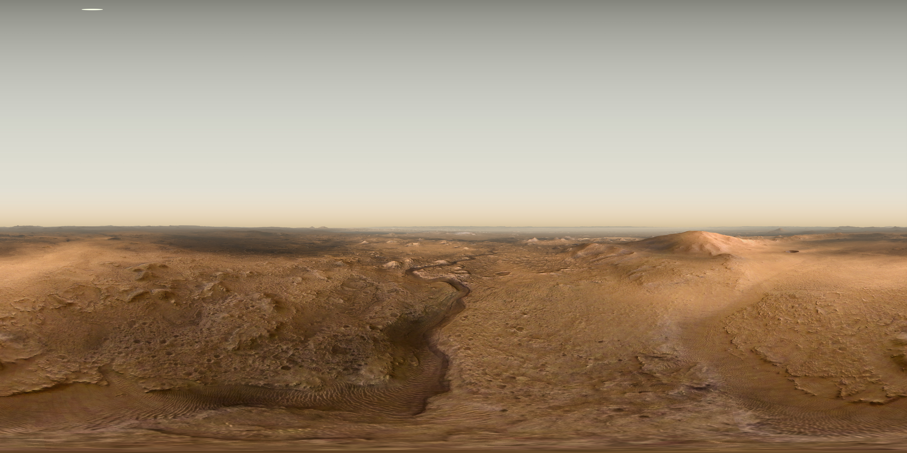
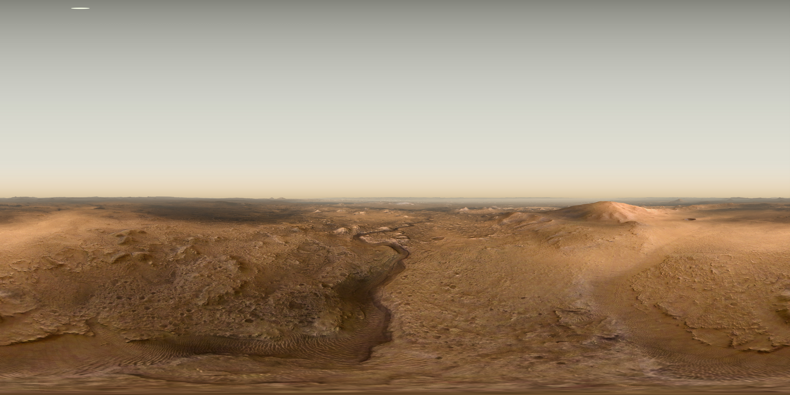
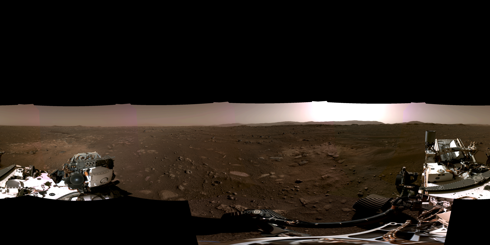
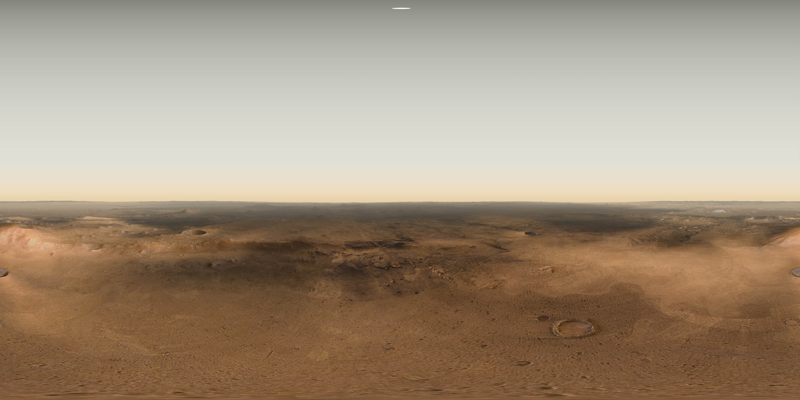
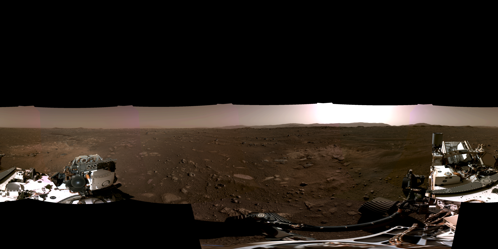
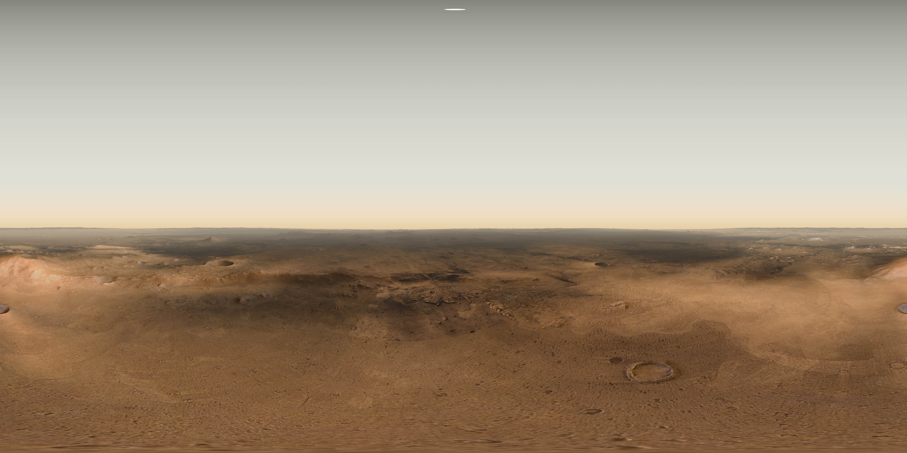
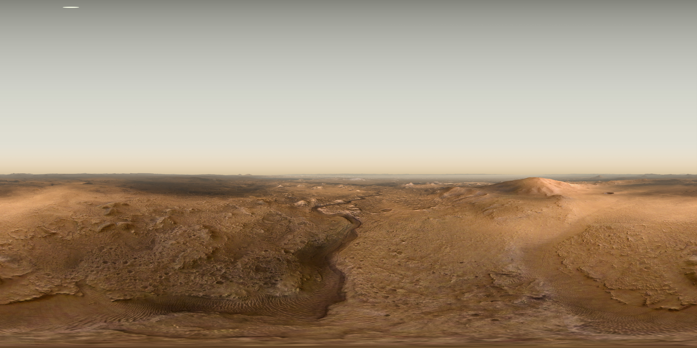
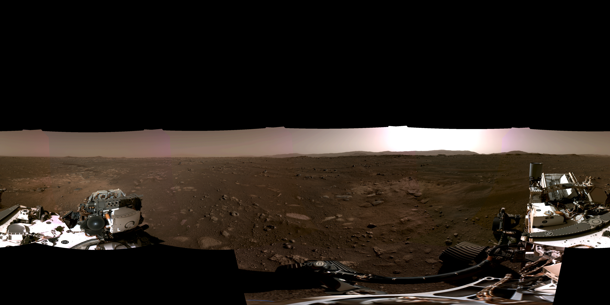
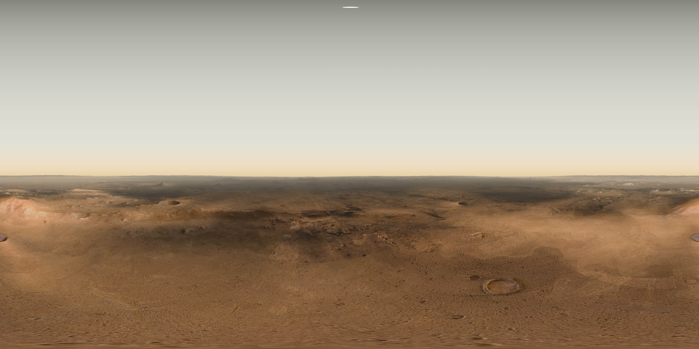

 




Move around in the map with your mouse. Zoom in and out with the scroll wheel or double click.
On mobile (touch) devices, move with your finger, zoom in and out with two finger zoom gesture.
To switch on and off the available layers, open the "Map layers" sidebar and use the respective buttons.
To enter a panoramic scene, click one of the "Panoramic views" symbols or choose directly a link inside the "Panoramic views" tab.
Inside a panoramic view, the Infotext tab is available with additional explanatory text.
When experienced on a mobile device with orientation sensors, the rotation of the view is controlled by rotating the device.
In the map mode, the fullscreen button is located in the upper right, if the fullscreen functionality is available for your browser. Inside a panoramic view, the fullscreen mode button is located in the sidebar.
If a Virtual Reality device is connected to your system and a compatible browser is used, the panoramic views can be experienced in VR by clicking the VR button in the sidebar.
A list of compatible browsers and VR devices can be found here.
Image credits: HRSC: ESA/DLR/FU-BERLIN, CC BY-SA 3.0 IGO CTX: NASA/JPL-Caltech/MSSS HiRISE: NASA/JPL/University of Arizona
Audio: NASA/JPL-Caltech/CNES/Cornell
Software: MapServer OpenLayers ol-layerswitcher sidebar-v2 a-frame parcel GDAL ISIS


